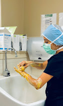

(346) 818-6780
Schedule Consultation
Cataract Surgery
Advanced cataract surgery by fellowship-trained surgeons. Modern techniques, premium lens options, and outcomes that consistently exceed expectations — right here in Cypress, Texas.
Understanding Cataracts
A cataract is the gradual clouding of the eye's natural lens — the structure responsible for focusing light onto the retina. As the lens clouds, it scatters and blocks light, causing the blurry, hazy, or dim vision that millions of Americans experience each year.
Cataracts are a natural part of aging. By age 80, more than half of all Americans either have a cataract or have had cataract surgery. The good news: it is one of the safest, most effective surgical procedures in all of medicine.
At Soni Vision Institute, cataract surgery is not just a routine procedure — it is an opportunity to transform your vision for the rest of your life.
Signs to Watch For
Cataracts develop slowly, and many people don't realize how much their vision has changed until after surgery.
Colors appear faded or washed out. Distant objects that used to be sharp now appear hazy, as if looking through a frosted window.
Increased sensitivity to light, especially at night. Oncoming headlights and streetlights may appear surrounded by halos or starbursts.
Needing stronger glasses or contacts more often than usual — without significant improvement in vision between changes.
Difficulty driving after dark or navigating dimly lit environments. Tasks that were once routine now feel uncertain.
Seeing double or ghost images in a single eye — a symptom that often appears in the early stages of cataract development.
Colors that once appeared vibrant now seem dull or yellowed. Blues may be particularly difficult to distinguish.
Our Surgical Approach
We perform cataract surgery using phacoemulsification — the gold standard technique in which an ultrasonic instrument breaks the clouded lens into tiny fragments that are gently suctioned away. The procedure typically takes under 20 minutes and is performed on an outpatient basis.
Once the cataract is removed, we implant an intraocular lens (IOL) to restore focusing power to the eye. The choice of IOL is one of the most important decisions in cataract surgery — and one where our expertise makes a significant difference.
Femtosecond laser technology for the most precise incisions and lens fragmentation available.
No needles, no injections around the eye. Eye drops keep you comfortable throughout the procedure.
Go home the same day. Most patients notice improved vision within 24–48 hours.
Both Dr. Soni and Dr. Reddy have advanced training in complex anterior segment surgery.

Lens Options
The IOL we implant after cataract removal will be your lens for life. Choosing the right one is one of the most impactful decisions you'll make for your vision.
Corrects vision at one distance — typically far. Covered by insurance. Most patients still need reading glasses after surgery.
Corrects vision at multiple distances. Most patients achieve complete independence from glasses and contacts after surgery.
Designed to correct astigmatism at the time of cataract surgery. Provides sharper, more precise distance vision for astigmatic patients.
Common Questions
Everything you need to know before your procedure — answered clearly and honestly.
Cataract surgery is one of the safest surgical procedures performed today, with a success rate exceeding 98%. Serious complications are rare. At Soni Vision Institute, both surgeons have performed thousands of procedures with outstanding outcomes.
Most patients experience noticeably improved vision within 24–48 hours. Full recovery — including stable vision and cleared activity restrictions — typically takes 4–6 weeks. You can usually return to light desk work within a day or two of surgery.
It depends on the IOL you choose. With a standard monofocal lens, most patients still need reading glasses. With premium multifocal or extended depth-of-focus IOLs, many patients achieve complete spectacle independence. We'll help you choose the right lens for your lifestyle.
Yes — Medicare and most private insurance plans cover the cost of basic cataract surgery with a standard monofocal IOL. Premium IOL upgrades (multifocal, toric, EDOF) are typically out-of-pocket. Our team will verify your benefits and provide clear pricing before your procedure.
We typically schedule each eye on separate days, spaced 1–2 weeks apart. This allows the first eye to heal and gives us the opportunity to fine-tune the approach for the second eye if needed.
Schedule your cataract evaluation with Houston's highest-rated surgical team.